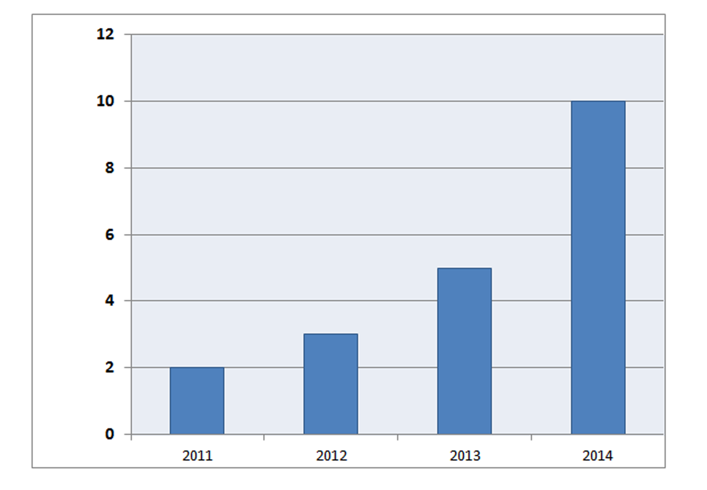
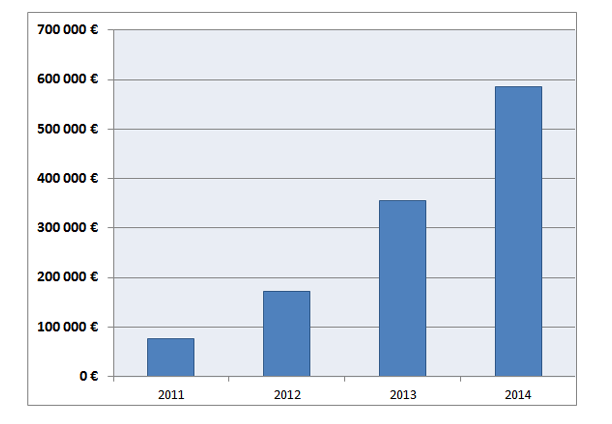

L
’histoire de Treeptik mais surtout celle de ses fondateurs permet de disposer d’un modèle économique rentable et durable. C’est une entreprise solide, financièrement stable et en expansion grâce à une croissance maîtrisée et une gestion saine.
Evolution des effectifs

Evolution du CA


Nous privilégions une croissance maîtrisée pour garantir la qualité de nos prestations